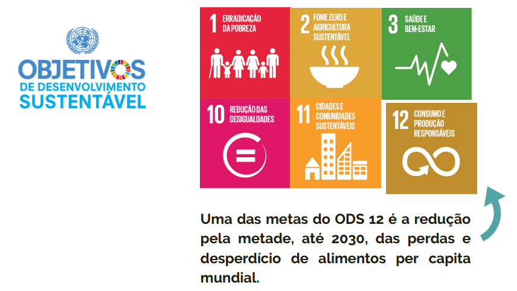

A Associação Prato Cheio é uma Organização Não Governamental, certificada como OSCIP (Organização da
Sociedade Civil de Interesse Público).
Fundada em 2001 por um grupo de universitários que identificou um grande volume de alimentos
desperdiçados no Mercado Municipal de São Paulo e passou a arrecadar e distribuí-los para entidades
assistenciais.
Promover o acesso à alimentação adequada para pessoas em situação de vulnerabilidade e risco social, através do combate ao desperdício de alimentos e da educação nutricional, contribuindo para o desenvolvimento socioambiental.
Ser referência no combate à desnutrição e desperdício de alimentos no território nacional.
A atuação da Prato Cheio está baseada em 3 eixos de ação: Colheita Urbana, que tem como base a coleta de alimentos frescos que seriam descartados de forma segura e seu posterior repasse; Educação e Sistematização do Conhecimento, focado na produção de conteúdo para diversos públicos e Alimentação e Desenvolvimento Sustentável, voltado para a promoção de sistemas alimentares justos e sustentáveis. Alinhados aos Objetivos do Desenvolvimento Sustentável da ONU , os projetos da Prato Cheio contribuem diretamente para o combate à fome (ODS 2), para a promoção de cidades e comunidades sustentáveis (ODS 11) e para o consumo e produção responsáveis (ODS 12), já que reduz o desperdício de alimentos, reduz resíduos orgânicos na cidade de São Paulo e leva alimentos de qualidade para pessoas em situação de vulnerabilidade social.
